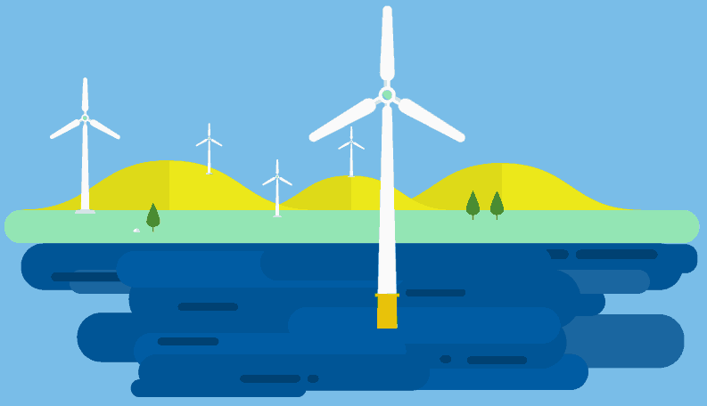

Wind energy is the process of conducting electricity using wind from the earth’s atmosphere.
There are three different types of wind energy:
- Utility-scale wind: ranges from 100 kilowatts to several megawatts, which power gets distributed to the power grid, which is then distributed to the user.
- Distributed wind: which are small wind turbines that are below 100 kilowatts which are used to directly a home or small business.
- Offshore wind: turbines that are constructed in large bodies of water. These turbines are larger than on land turbines.
The blades on a wind turbine gather the wind’s kinetic energy and rotate, which it then gets turned into mechanical energy
The standard size of a wind turbine is at least 80 meters which is 262 feet tall.
Turbine Components:
- Rotor
- Drive train
- Tower
A wind turbine does not start generating electricity unless the wind is blowing at 6-9 mph. Which, it will turn off is the winds are too strong which is around a wind speed of 55 mph.
Wind turbine blades are similar to aircraft propeller blades!
A wind farm is really common which are a large group of wind turbines to generate energy from the wind.
Wind energy is a renewable resource which is good for the economy.